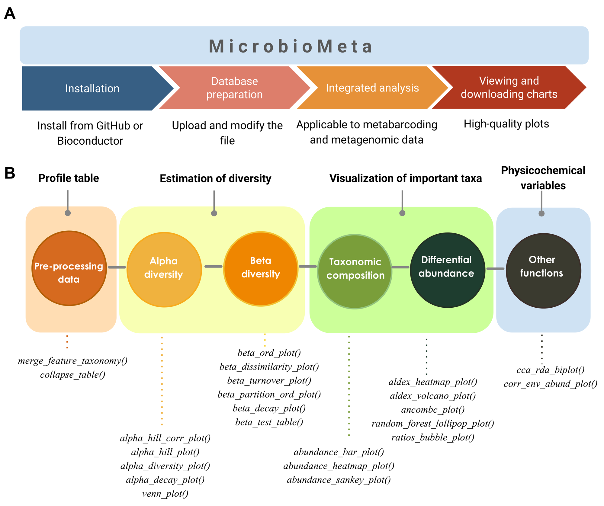

The goal of MicroBioMeta is to support beginners in microbiome data analysis, whether working with metagenomic or metabarcoding datasets. It enables users with limited experience in R to explore, visualize, and analyze results with minimal coding and customization. This helps save time on scripting, while still producing statistically robust results and publication-ready figures in an intuitive and accessible way.
The functions take a feature table (taxa in rows, samples in columns, with a taxonomy column at the end) and a metadata table (sample IDs in the first column). They cover:
- Composition: bar plots, heatmaps and Sankey diagrams.
- Alpha diversity: Hill numbers, classic indices, diversity along continuous gradients and Venn diagrams.
- Beta diversity: ordinations, PERMANOVA/betadisper, turnover and nestedness partitions, and distance-decay.
- Differential abundance: ALDEx2, ANCOM-BC2, random forest and log-ratios.
- Environmental variables: correlations and CCA/RDA biplots.

💻 Installation
MicroBioMeta is not on Bioconductor yet. For now, install it from GitHub:
# install.packages("remotes")
remotes::install_github("Steph0522/MicroBioMeta")Once it is accepted in Bioconductor, it will be installed with:
if (!requireNamespace("BiocManager", quietly = TRUE)) {
install.packages("BiocManager")
}
BiocManager::install("MicroBioMeta")📗 Documentation
Tutorials in English and Spanish are on the web page:
🧪 Example data
The package includes 16S and 18S metabarcoding data from Ricinus communis soils and roots, and shotgun metagenomic (Kraken2/Bracken) data from forest soils of Central Mexico, all from published studies. Their sources and how they were prepared are described in inst/script/README.md.
👩💻 Contributors
- Stephanie Hereira - lead developer.
- Nina Montoya - co-developer and functions.
- Karla Zarco - co-developer and functions.
🙌 Code of Conduct
Please note that the MicroBioMeta project is released with a Contributor Code of Conduct. By contributing to this project, you agree to abide by its terms.
🔨 Development tools
- Continuous code testing is possible thanks to GitHub actions through usethis, remotes, and rcmdcheck customized to use Bioconductor’s docker containers and BiocCheck.
- Code coverage assessment is possible thanks to codecov and covr.
- The documentation website is built with pkgdown.
- The code is styled with styler.
- The documentation is formatted thanks to devtools and roxygen2.
This package was developed using biocthis.